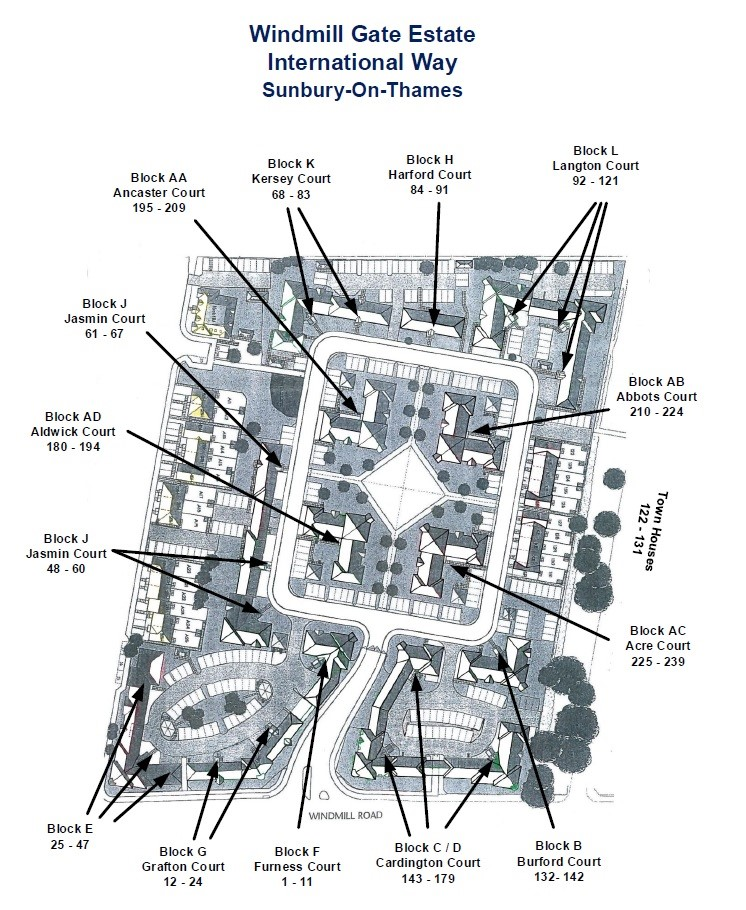

We are installing temporary fencing to block access to the site from unwanted visitors.
There are 3 main vulnerable areas where the public can enter International Way. By the play park into Lincoln Way, by CD block onto Windmill Road and by E block onto Windmill Road.
The site has many visitors from Lincoln Way and elsewhere. We have many reports that our play park is being used by youths who cause damage that we have to repair. We have reports of Lincoln Way residents entering the site to exercise their dogs and don't clear up their dog mess.
CCTV has shown us that we have visitors to the site in the hours of darkness who are checking for unlocked cars and stealing from the carports and insecure communal areas. We are vulnerable to drug dealing and have several issues that have now been resolved and we want to keep the site free from drug dealers and those buying drugs.
The site was sold to many under the guise of it being secure.
To make the site as safe as possible for all of the residents.
We anticipate approximately 6 - 12 months.
We intend to review whether or not the fences achieve the desired objective. If it does, we intend to install permanent fences with gates to allow leaseholders and tenants to come and go through these 3 areas.
If it does not we will discuss what measures need to met to achieve a secure site.
It has not been decided yet and we will seek advice from professional installers. Our intention is to install gates with fobs, key or number lock access for resident use only. Any fences / gates will be in keeping with existing designs and colours across the estate.
We don't know yet as we are in the planning stages. We anticipate a cost less than £10,000 and it will come from existing reserve funds. No leaseholder will be asked to contribute more for it.
No, we have already put the proposal through the legal team at Prime, we are entitled to protect the estate and the lease allows for it.
Yes. Any gates we install will be suitable for use by those in wheelchairs or with prams/buggies.
According to the Lease, the short answer is No.
- According to “THE SEVENTH SCHEDULE” of the Lease,
- Section 6 “The Lessee shall pay to the Manager the Lessee’s proportion of the Maintenance Expenses in a manner that is to say: ”
- 6.1 In advance on the First day of September and the First day of March in every year throughout the Term one half of the Lessee’s proportion of the amount.
- Under “THE EIGHTH SCHEDULE”, Section 3 “To pay interest at the rate of four per centum (4%) above Barclays Bank Plc Base Rate from time to time on all sums payable by way of rent or service charge which shall be in arrears from the date due until the date of actual payment”
As you can see above, the Directors have no power to go against the covenant in the Lease unless exceptional circumstances that could satisfy a court exists.
For general quires, please conatact Prime on 020 3700 8733, or you can email them on info@primepm.co.uk
You can find more details in the About tab. Click here to go there.
If you are renting, please contact your landlord or letting agent.
- Simarc Property Management Limited act on behalf of the freeholder in collecting the yearly ground rent from the leaseholders.
- How and when you pay your ground rent will depend on your Lease. Either directly to Simarc (the majority of the blocks), or indirectly via HML (in the case of Blocks AB & AC), or via A2Dominion (in the case of Block E & J).
- The Ground rent is normally paid twice a year, in Sep & March (or once a year in the case of A2Dominion).
- Ground rent does not apply to the Houses, as they are freehold.
Yes, there is.
- Most of the parking spaces within the estate is allocated to individual leaseholders (with numbers on the ground). Please do not park there, UNLESS authorised by the owner.
- There are few visitor parking spaces (invicated by the 'V' on the ground), which is available for parking to others.
- No parking is allowed on the double yellow lines at any time.
- Commercial vehicles are not allowed to park overnight on the estate.
Yes. The UK Parking Control (UKPC) are responsible for enforcing the parking restrictions, and issuing tickets for any vehicle that violates them.
Please find below the blocks and their flat numbers:
- Block F: 1 – 11
- Block G: 12 – 24
- Block E: 25 – 47
- Block J1: 48 - 60
- Block J2: 61 – 67
- Block K: 68 – 83
- Block H: 84 – 91
- Block L: 92 – 121
- Block B: 132 – 142
- Block C/D: 143 – 179
- Block AD: 180 – 194
- Block AA: 195 – 209
- Block AB: 210 – 224
- Block AC: 225 - 239
We also have Town Houses: 122 – 131.

Yes, there are a number of bike sheds throughout the estate, near block C/D, block B, block F, and there is another one at the back of block K.
For the bike shed codes, please refer to the appropriate RTM Directors/other residents of that block or Prime.
For security reasons, we could not publish the bike shed codes!
Prime has recently sent an email to say that setting off fireworks in International Way is not permitted, as this is a fire hazard and could cause damage to property.
Please visit our Recommendations tab. Click here to be directed to that page.
The closest place is the Shepperton Community Recycling Centre. Charlton Lane, Shepperton, Surrey, TW17 8QA. Clink here to visit their page: Shepperton Community Recycling Centre - Surrey County Council for more information, including opening times, map, etc.
The service is free for private local residents (may need to show ID with local address).
You can find them all in our Recommendations tab. Click here to go the specific section on the page.
The food wate is collected weekly. The general waste & recycle waste are collected every other week. For more detailed information, please visit the Waste Bins & Recycling section of the About page. Click here to go to that sections.
If you think your bins have been accidentally missed, please contact the Council within one working day by completing the online form, click here for the online form or contact Customer Services on 01784 451 499.
There are a number of things to consider:
- Why do you want to access the reccrdings?
- You will need to provide the approximate time and date
- Who have access to the CCTV recordings? Is it the RTM or Prime?